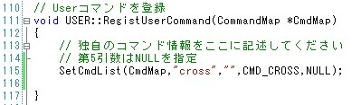
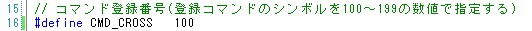
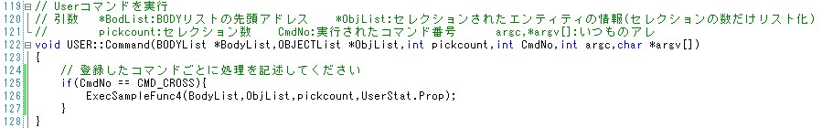
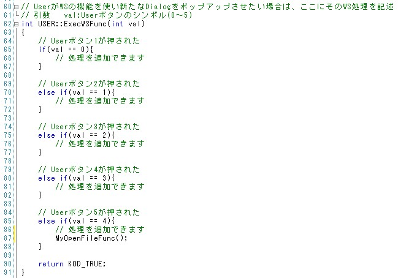

|
|
|
Prev
Index
Next |
その他
UserFuncには、これまで述べてきた機能に加え、更に以下に2つの機能があります。
- ユーザーコマンドの登録
Kodatunoでは、システムが提供するコマンド(2.4 各コマンドの名称と機能 )以外に、 ユーザーが独自でコマンドを作成し、登録することができます。サンプルとして、(2.7 簡単なアプリケーションの作成 ) で示したプログラムをコンソールから実行できるようにしてみます。以上で、コマンド登録及び、コマンド入力後の応答を実装することができました。
- まず、コマンド名を登録します。コマンド名は"cross"とします。
UserFunc.cpp内にRegistUserCommand()関数があります。その関数内を次のように変更してください。SetCmdList()関数は、Command.cpp/.hに定義されています。第1引数はコマンドの名前やオプションの有無などを格納した構造体(実体はKodatuno.hで定義されています)への ポインタ(変更不可)、第2引数はコマンド名、第3引数はオプション指定、第4引数はこのコマンドのシンボル、第5引数はシステムコマンドでないことを明示するためにNULLを指定します。 第4引数であるコマンドのシンボルは、UserFunc.hでユーザーが定義しなければなりません。   - 次に、"cross"が入力されたときの処理をUserFunc.cpp内のCommand()関数に記述します。
コンソールに"cross"が入力されると、Command()の第4引数CmdNoに先ほど定義したcrossコマンドシンボル"CMD_CROSS"が渡されます。 よって、Command()内ではCMD_CORSSが入力されたことを条件として、ExecSampleFunc4()を実行するようにコーディングします。 
- Wide Studioが提供するダイアログの利用
例えば、ユーザー独自のファイルフォーマットの読み込みを行いたい場合などに便利です。 Wide Studioの機能をUser Funcより用いる場合は、専用の関数ExecWSFunc()を通して行う必要があります。 以下に、ユーザーボタン"User Func 5"にファイルをオープンするダイアログを適用する例を示します。以上で、UserFuncにおけるダイアログの表示が可能となります。
- まず、ExecWSFunc()にこれから作成する関数名を記述します。今回の例では、MyOpenFileFunc()という名前とします。
MyOpenFileFunc()をvalが4となる位置に挿入しました。valは"User Func"ボタンのシンボルを示し、val=4の場合、"User Func 5"を示します。 
- 次に、MyOpenFileFunc()を書いていきます。
Wide Studioに関するコーディングはWide Studioのリファレンスを参照してください。 関数冒頭の3行でダイアログを開く処理を行っています。今回の例では、拡張子igsのみダイアログに表示されるようにしています。 次のif文以降で、ダイアログのOKが押された場合の処理を記述します。
| Copyright(C) Kodatuno Development Team, 2011 | Last modified: Nov. 11, 2011 |